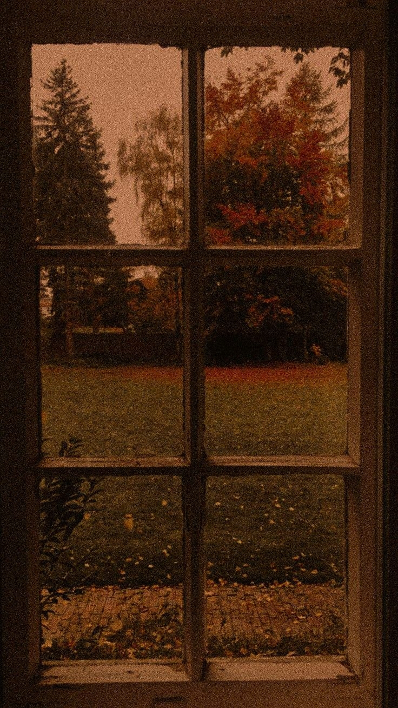
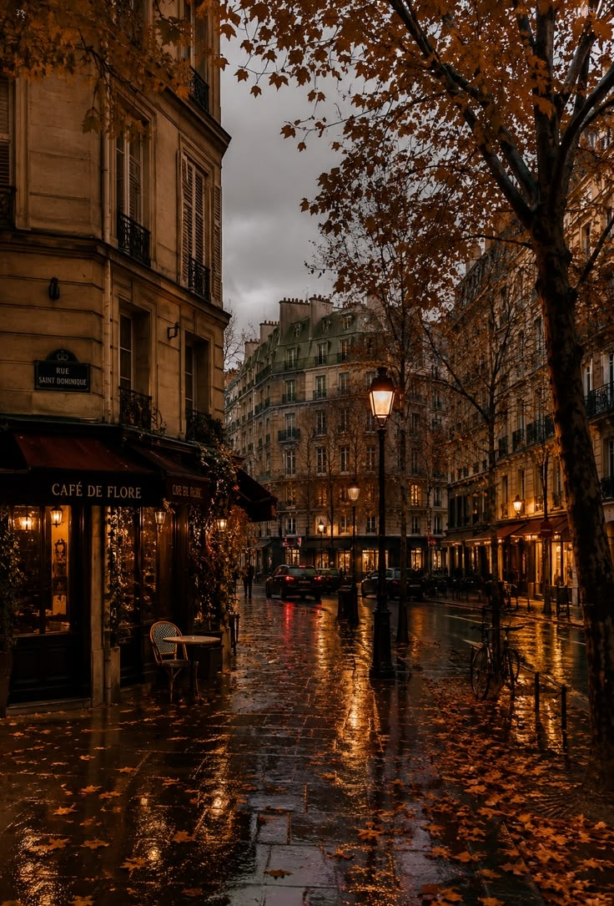
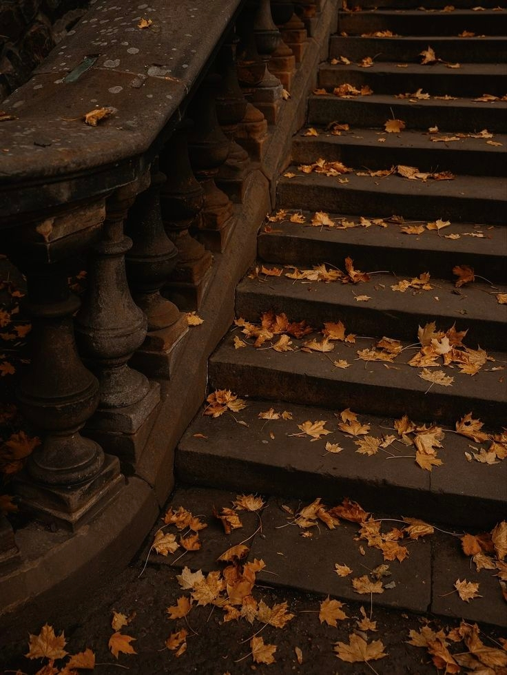
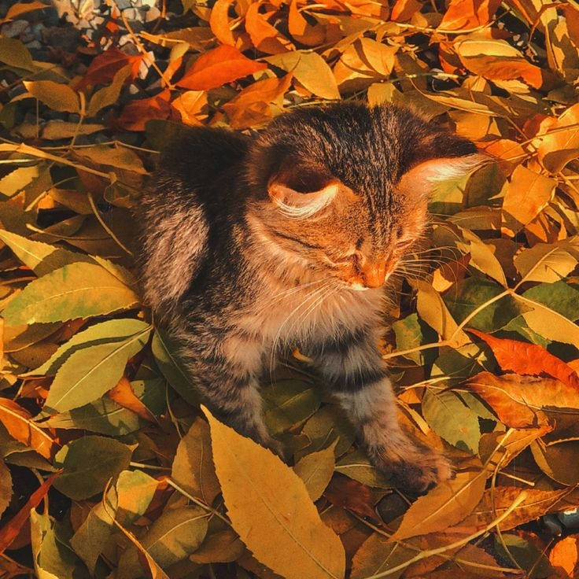
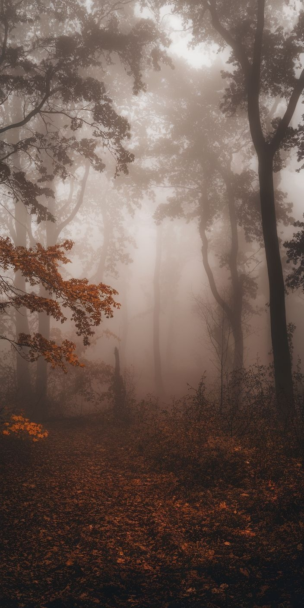
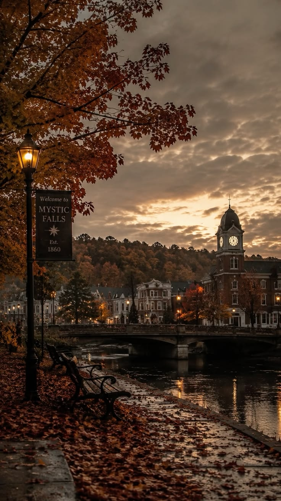
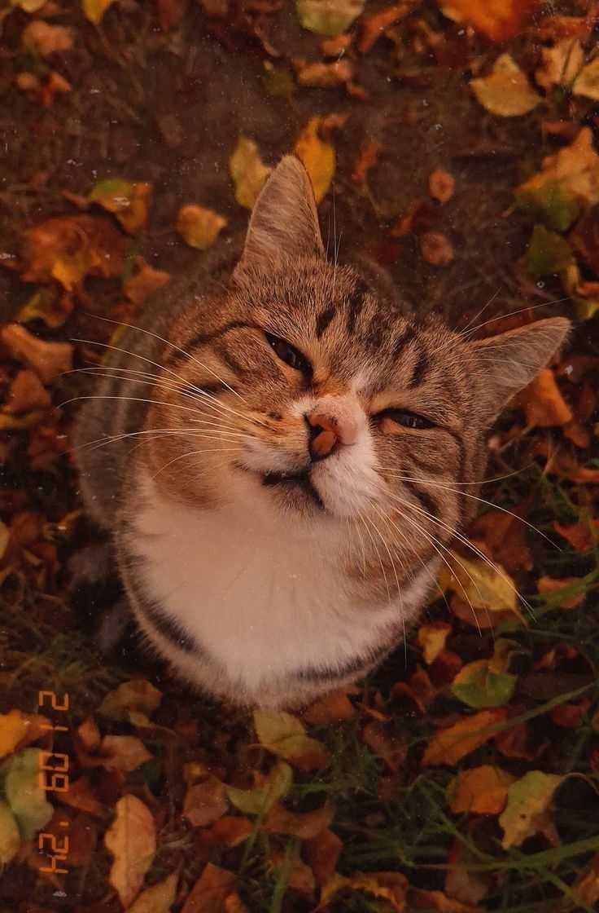
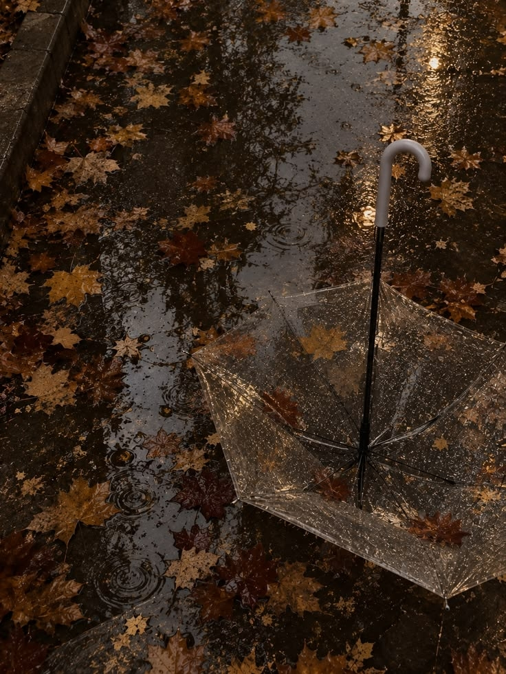
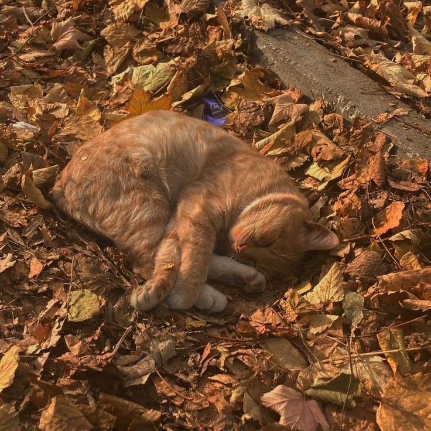

Обо мне
Просто сайт с осенней эстетикой и цитатами.
Осенние картинки









Мои любимые цитаты
Мы то, что мы делаем постоянно. Совершенство — не действие, а привычка.
Краткость — сестра таланта.
Всё гениальное просто, но не всё простое гениально.
Ученье — свет, а неученье — тьма.
Жизнь — как вождение велосипеда. Чтобы сохранить равновесие, ты должен двигаться.
В человеке всё должно быть прекрасно: и лицо, и одежда, и душа, и мысли.
Не бойся, что не знаешь — бойся, что не учишься.
Мы всё можем пережить, кроме смерти, и всё вынести, кроме власти.
Свобода — это не то, что даётся, а то, что берётся.
Единственный способ сделать отличную работу — любить то, что делаешь.